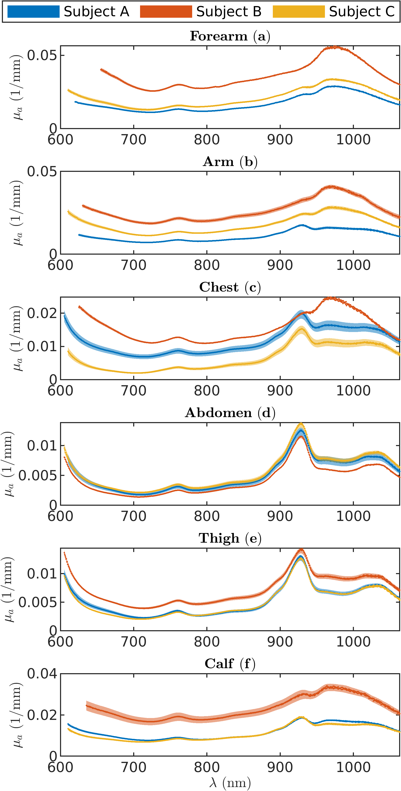
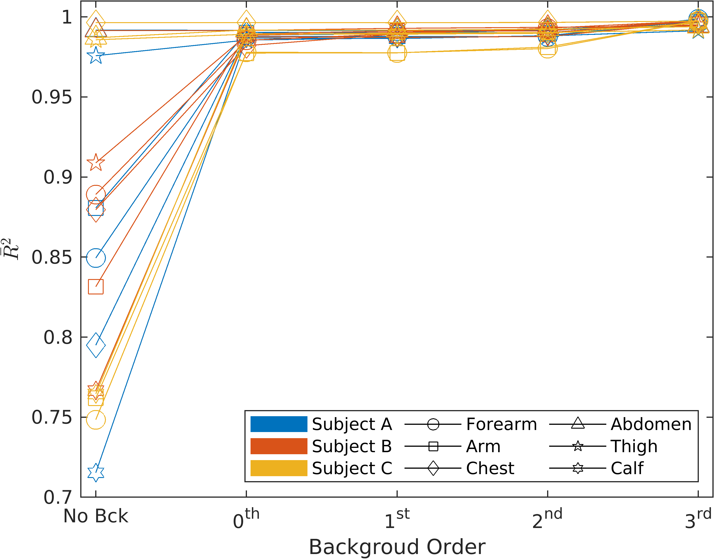
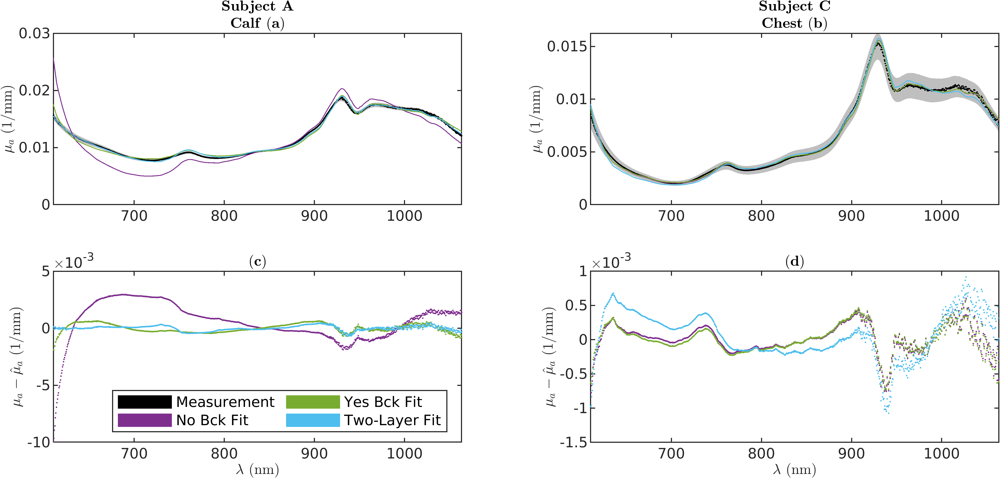
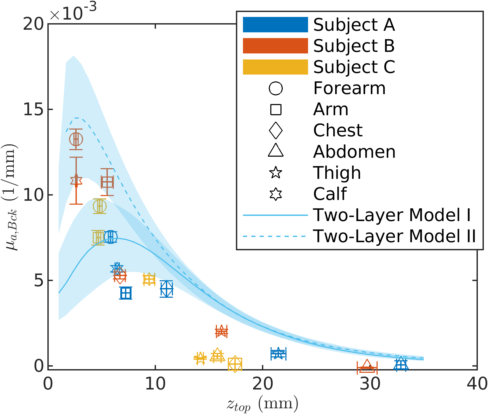
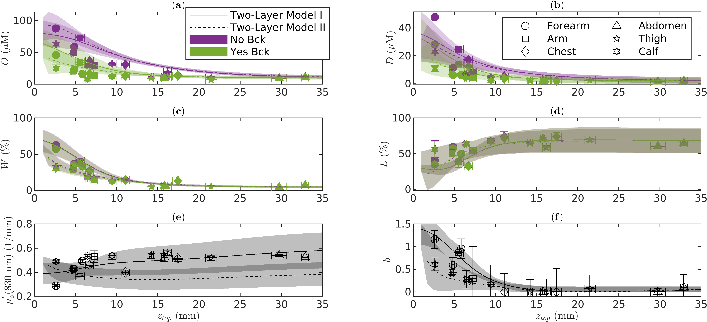
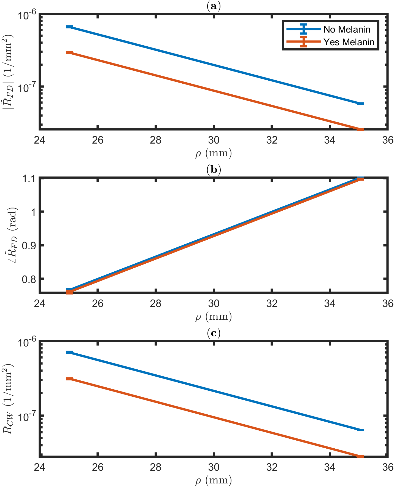
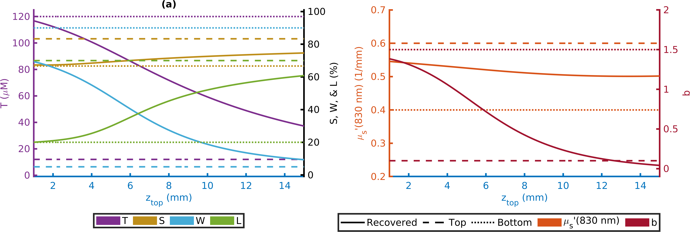
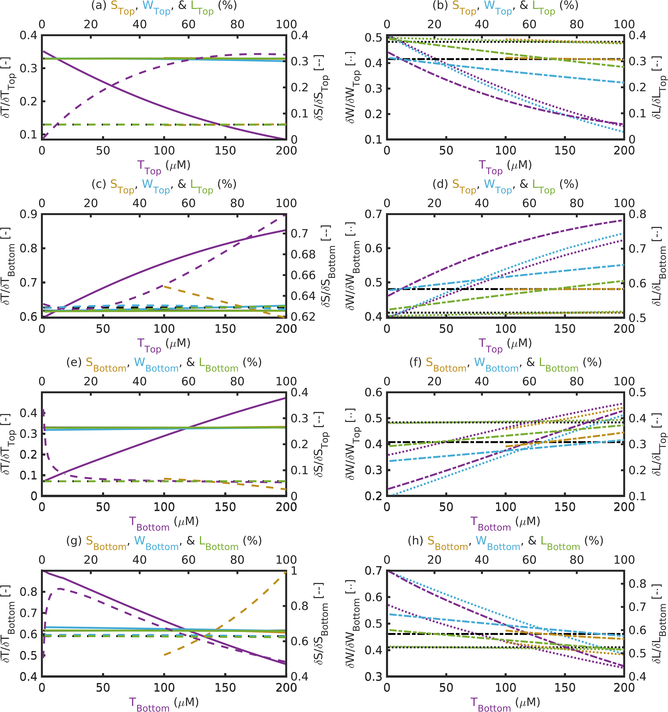

Absolute Absorption Spectroscopy of Tissue
Absolute Absorption Spectroscopy of Tissue
In-Vivo Absolute Absorption Measurements of Muscle
In absolute μa spectra (λ approximately 600 nm–1024 nm) of 6 tissues in 3 healthy subjects were measured using the DS CW bDRS plus SC FD NIRS method described in the previous chapter and . The spectral fit of a linear combination of O, D, W, and L εs was carried out to find absolute concentrations of said chromophores. The goodness of these fits and possible artifact origins are discussed in the following sections.
In-Vivo Muscle Measurement Procedure
lcc|cc||lS[table-format=2.2(1)] Sub &
Age () & Sex & Height (m)
& Mass (kg) & Tissue & \(z_{top}\) (mm)
& & & & & Forearm & 5.8(2)
& & & & & Arm & 7.2(4)
& & & & & Chest & 11.1(5)
& & & & & Abdomen & 32.9(4)
& & & & & Thigh & 21.5(7)
& & & & & Calf & 6.4(2)
& & & & & Forearm & 2.6(2)
& & & & & Arm & 5.5(6)
& & & & & Chest & 6.7(5)
& & & & & Abdomen & 29.7(9)
& & & & & Thigh & 16.2(5)
& & & & & Calf & 2.63(8)
& & & & & Forearm & 4.8(2)
& & & & & Arm & 4.7(2)
& & & & & Chest & 17.4(6)
& & & & & Abdomen & 15.8(3)
& & & & & Thigh & 14.2(3)
& & & & & Calf & 9.4(5)
This table can be found as Table 1 in .
Errors are Standard-Error of the Mean (SEM).
Subject (Sub); top layer thickness (\(z_{top}\)).
Various tissues were measured using the combined DS CW-bDRS/SC FD-NIRS approach from Chapter [ch:DSbDRS]. In 3 human subjects were labeled A, B, & C and were measured at 6 locations (Table [tab:AOtab1]). Informed consent was obtained per the Tufts University’s IRB. The 6 tissue locations were:
The upper arm (biceps brachii muscle).
The forearm (brachioradialis muscle).
The chest (pectoralis major muscle in male, breast in female).
The abdomen (abdominal muscles).
The inner thigh (gracilis muscle).
The calf (gastrocnemius muscles).
These tissues were chosen to feature a large range of adipose layer thickness, and to exhibit various chromophore concentrations. For Subject A, the measurements were repeated seven times on each tissue, while for Subjects B & C they were repeated 3 times. In each case the repeated measurements were taken over multiple days.
The instrumentation and methods for DS CW-bDRS/SC FD-NIRS measurements were the same as the Chapter [ch:DSbDRS] and with the replacement of MD SC for the FD measurements. 2 separate optical probes were used, 1 for SC FD NIRS and 1 for DS CW bDRS, that realized a linear symmetric DS arrangement in Figure [fig:DSset] with ρ of 25 mm, & 35 mm. CW and FD measurements were taken within a few minutes and millimeters of each other (since the goal was absolute baseline measurements, which are not expected to quickly vary spatially nor temporally). In the DS CW bDRS measurements, the λ range was 600 nm–1064 nm (sampled about every 0.5 nm). The lower λ was chosen based on the SNR of the measured I. The DS CW-bDRS measurements were averaged over approximately 5 min since only static spectra were sought, though the current instrument is capable of dynamic measurements at about 0.25 Hz. In the case of SC FD NIRS, approximately 1 min of data were averaged and the discrete λs were 690 nm, & 830 nm.
In addition to the optical measurements, skin-fold calipers were used to measure the top-layer thickness (\(z_{top}\); caliper reading was divided by 2) for each tissue. These measurements are representative of adipose tissue thickness . The \(z_{top}\) measurement was repeated 3 times at each of 3 places beneath where the optical probe was placed. These 9 (3 repeats at 3 places) measurements were averaged for each subject and tissue (Table [tab:AOtab1]).
From Absolute Absorption to Absolute Chromophore Concentrations
2 dominant chromophores in NIRS are O and D . Additionally, at longer λs (about 900 nm–1100 nm) W and L show significant μa, and collagen provides a minor contribution . CCO is another relevant NIRS absorber, providing information about cellular metabolism and whose measurement benefits from broadband measurements . These chromophores may be fit for using a linear combination of their ε spectra to explain the measured μa (Appendices [app:forMod]&[app:recChrom]). Broadband μa spectroscopy increases the accuracy of chromophore concentration measurements and reduces cross-talk among chromophores compared to measurements at discrete λ .
Another approach that takes advantage of broadband data is derivative spectroscopy. For example, the spectral second derivative of absorbance at 930 nm–970 nm or 825 nm–850 nm was proposed to quantify the W concentration. First-derivative absorbance spectroscopy may then be used to obtain other chromophore concentrations and μ′s spectra . Advantages of derivative spectroscopy include auto-calibrating features, reduced sensitivity to unknown coupling factors, and investigation of hard-to-distinguish chromophores . These are balanced by the disadvantage of a greater degree of noise in the derivative spectra compared to the original spectra.
Regardless of the type of spectral fit, these concentration measurements often report effective values, considering tissue as homogeneous. Attempts to address this assumption have involved two-layer models, which leverage the added information of broadband spectra or multiple ρs . However, the question of how the measured effective concentrations relate to the actual, spatially distributed concentrations in tissue is still open and depends on the methods used for the measurement.
Effective Homogeneous Chromophore Fits
In absolute μa was retrieved using DS CW bDRS plus SC FD NIRS and the methods in Appendix [app:absOptPropMeas] and . These μa spectra were fit to O, D, W, and L εs using the methods in Appendix [app:recChrom]. Additionally, the fits were done a second time allowing an spectrally constant artifact ε in the fit to retrieve \(\acrshort{mua}_{Bck}\) as a fifth parameter . This allowed us to examine the goodness of the fits with and without the \(\mu_a_{Bck}\) parameter, and how the recovered O, D, W, and L changed between the 2 fits. The need to use \(\acrshort{mua}_{Bck}\) to achieve a good fit was considered a measure of fit artifact. These 2 fits are referred to as No Bck and Yes Bck depending on the presence of \(\acrshort{mua}_{Bck}\).
In each case, the recovered chromophore concentrations were used to calculate the fitted μa spectrum, which is compared with the one obtained from the data. The goodness of these fits was evaluated using the R̄² which characterizes fits in a similar way to the R², but accounting for the degrees-of-freedom. In these fits, the number of explanatory variables was taken as the \(n_C\) and the number of measurements as \(n_{\text{CW}} / n_{\text{FWHM}}\) where, \(n_{\acrshort{FWHM}}\) is the FWHM of the DS CW-bDRS system’s spectral point-spread function in λ samples. For the system employed here, \(n_{\acrshort{FWHM}}=20\) samples or about 10 nm, as measured using a helium-neon laser. Thus, the number of independent measurements, and further the fit goodness accounted for the spectral width of the system.
Effective Two-Layer Chromophore Fits
"
A third inverse method aside from the No Bck and Yes Bck homogeneous recoveries was performed in . This was a pseudo-recovery of effective two-layer chromophore concentrations and scattering parameters. This method is so-called pseudo since the result may not be the global minimum of the optimization problem (only local) and thus, may not be unique. The two-layer fit was implemented using the MATLAB optimization toolbox and the "fmincon" function fitting for 12 parameters (4 chromophores plus 2 reduced scattering values for each layer). The start point was set as the values for Model I in Table [tab:AOtabS2] for every tissue and subject, these values were also used to scale the problem (id est normalize parameters). The layer thickness was fixed to the value measured and presented in the main paper. Both bound and inequality constraints were used for both layers as follows:
0 \(\leq\) O \(\leq\) 200
0 \(\leq\) D \(\leq\) 100
0 \(\leq\) W \(\leq\) 1
0 \(\leq\) L \(\leq\) 1
0 mm \(\leq\) μ′s(690 nm) \(\leq\) 10 mm
0 mm \(\leq\) μ′s(830 nm) \(\leq\) 10 mm
D \(\leq\) O (id est S \(\geq\) 0.5)
W \(+\) L \(\leq\) 1
μ′s(830 nm) \(\leq\) μ′s(690 nm) (id est \(b \geq\) 0)
μ′s(690 nm) \(\leq\) μ′s(830 nm) \(\times\left(\frac{\text{\SI{690}{\nano\meter}}}{\text{\SI{830}{\nano\meter}}}\right)^{-4}\) (id est \(b \leq\) 4)
where, O is O concentration, D is D concentration, W is W volume fraction, L is L volume fraction, μ′s is μ′s, S is S, b is the b (Equations [equ:scatPowLaw]&[equ:scatb] and Appendix [app:forMod]). Optimization was carried out with the "interior-point" algorithm of "fmincon". For each fit it was unsure that a local minimum was either found or possibly found by the optimization algorithm.
The cost function was the square of the Euclidean norm of the difference between the measured and simulated recovered optical properties (id est the sum of the squared residuals). The simulated recovered optical properties utilized Appendix [app:forMod] to simulate R and R̃ then Appendix [app:absOptPropMeas] on said R and R̃ to retrieve simulated recovered μa and μ′s at the various experimental λs (Appendix [app:simSigFromSen] and ). For optimization, \(z_{top}\) was fixed using the values in Table [tab:AOtab1] and the remaining 12 parameters varied and fit for. These parameters were: O, D, W, L, μ′s(690 nm), and μ′s(690 nm) for both layer 1 and 2. These fits goodnesses were also evaluated using R̄² just as the previous section considering the number of explanatory variables as 12 and the number of measurements as \(n_{\acrshort{CW}}/n_{\acrshort{FWHM}}+2\) to account for the two FD measurements as well as the CW measurements. "
In-Vivo Spectral Results
Absolute Effective Absorption Spectra Recovered In-Vivo

Note 1: This figure can be found as Figure 1 in .
ll|S[table-format=1.4(1)]S[table-format=1.4(1)]||S[table-format=1.2(1)]
& & &
Tissue & Sub & 690 nm
& 830 nm & b
& A & 0.59(2) & 0.49(1) & 1.0(2)
& B & 0.36(1) & 0.290(7) & 1.2(2)
& C & 0.477(9) & 0.43(1) & 0.6(2)
& A & 0.56(5) & 0.53(5) & 0.3(7)
& B & 0.4316(9) & 0.367(2) & 0.87(3)
& C & 0.465(2) & 0.430(2) & 0.43(4)
& A & 0.40(2) & 0.40(2) & 0.0(4)
& B & 0.479(2) & 0.459(2) & 0.24(4)
& C & 0.4(1) & 0.52(3) & 0(1)
& A & 0.53(2) & 0.52(2) & 0.1(3)
& B & 0.521(8) & 0.540(8) & 0.0(2)
& C & 0.50(3) & 0.52(3) & 0.0(5)
& A & 0.53(2) & 0.52(2) & 0.1(3)
& B & 0.56(2) & 0.56(2) & 0.0(3)
& C & 0.53(4) & 0.55(3) & 0.0(5)
& A & 0.56(1) & 0.53(1) & 0.3(2)
& B & 0.549(9) & 0.49(1) & 0.6(1)
& C & 0.56(3) & 0.54(3) & 0.2(4)
This table can be found as Table S1 of the supplementary material in .
Subject (Sub); reduced scattering coefficient (μ′s); reduced scattering power coefficient (b) from Equations [equ:scatPowLaw]&[equ:scatb] and Appendix [app:forMod].
Figure 1.1 shows the average absolute μa spectra for all 3 subjects and 6 tissues in . The μ′s measurements can be found in Table [tab:AOtabS1]. The errors represent the SEM over the repeated measurements, thus, the μa spectra were found to be highly reproducible, with intra-subject variability for each tissue much smaller than the inter-subject variability in most cases. Some general observations about the spectra include:
The dominant lipid peak at about 925 nm for tissues with larger \(z_{top}\) (Table [tab:AOtab1]).
Conversely, the dominant water peak at about 975 nm and overall higher μa for tissues with smaller \(z_{top}\), consistent with expectations on adipose versus muscle tissue .
Typically higher μa values for Subject B.
Recovered Effective Homogeneous Chromophores

Note 1: This figure can be found as Figure S7 in the supplementary material of .
Note 2: No Bck is a fit without an absorption background.

Note 1: This figure can be found as Figure 2 in .
Using data in Figure 1.1, the effective homogeneous chromophore fit was carried out both for No Bck and Yes Bck. These results are found in Table [tab:AOtab2]. One striking observation is that the fit improves (even accounting for the change in the degrees-of-freedom) by adding a spectrally independent background for 15 of 18 cases (fit goodness is unaffected in the remaining three cases). Furthermore, this fit improvement is achieved solely by a spectrally constant \(\acrshort{mua}_{Bck}\) since higher order backgrounds (linear, quadratic, et cetera) do not significantly improve the fits, as can be seen in Figure 1.2.
Examining the effect of the inclusion of \(\acrshort{mua}_{Bck}\) in the fits, it can be seen that this background typically decreases the recovered O and D concentration, and thus the recovered T concentration (in cases where Yes Bck exhibited fit improvement over No Bck). This is not the case for W and L concentrations, which show little to no difference. Additionally, S is also negligibly impacted by the inclusion of \(\acrshort{mua}_{Bck}\).
Further, the effect of this μa background on the spectral fit shape can also be seen in Figure 1.3, which shows 2 cases, one where there is significant improvement for Yes Bck versus No Bck, and one where there is no improvement. It can be seen that for the data from Subject A’s calf (a case with a relatively thin \(z_{top}=\)6.4 mm; Table [tab:AOtab1]) the background significantly improves the agreement between the fit and the measurement. This is particularly true at lower λs, where hemoglobin dominates the μa spectrum. In the case of data from Subject C’s chest (a tissue expected to be relatively homogeneous based on \(z_{top}=\)17.4 mm and tissue type; Table [tab:AOtab1]) the inclusion of background has almost no effect on the fit, which is reflected by the small recovered \(\acrshort{mua}_{Bck}\) and the unimproved R̄² (Table [tab:AOtab2]). The detailed fits and residual spectra can be found in the supplementary material of for every subject and tissue.
Pseudo-Recovered Effective Two-Layered Chromophores and Two-Layer Modeling

Note 1: This figure can be found as Figure 3 in .

Note 1: This figure can be found as Figure 4 in .
Note 2: Yes Bck and No Bck have no difference in scattering parameters.
Figure 1.3 additionally presents the fit and residuals for the two-layer pseudo-recovery. One can see that when the Yes Bck improves upon the homogeneous fit, the two-layer fit also results in an improvement upon the homogeneous fit (Figure 1.3, Subject A calf, for example). These and all other two-layer pseudo-recovery results can be found in Table [tab:AOtabS3], which shows that the two-layer pseudo-recovery is better than the homogeneous recovery with Yes Bck in 14 of 18 cases. It is emphasized that the two-layer pseudo-recovery is named pseudo since its goal is not to recover the true two-layer chromophores, but instead a set of two-layer properties that recreates the measured effective homogeneous μa. Additionally, it is not expected that the second-layer properties for thick top-layers are valid (as the deep layer has little effect on the measurement).
An inspection of Table [tab:AOtabS3], in conjunction with the top layer thicknesses (\(z_{top}\)) reported in Table [tab:AOtab1], results in 3 observations for the cases when \(z_{top}<\SI{12}{\milli\meter}\) (namely, in the forearm, arm, chest for Subjects A and B, and calf):
The first observation being that the two-layer fits yielded higher T and W concentrations in the second (bottom) layer, and higher L concentrations in the first (top) layer.
The second observation is that μ′s was found to be greater and to feature a stronger λ dependence (id est a larger b) in the second (bottom) layer. These results are consistent with an adipose top layer and muscle bottom layer , particularly in terms of the lower μa and weaker λ dependence of scattering in the top layer.
A third observation, by further consideration of the results in Table [tab:AOtab2], is that when \(z_{top}<\SI{12}{\milli\meter}\) the homogeneous O and D concentrations obtained without μa background (No Bck) are consistently closer to the corresponding concentrations in the second layer (Table [tab:AOtabS3]) than to those in the first layer.
Additionally, in the same case (\(z_{top}<\SI{12}{\milli\meter}\)), the homogeneous O and D concentrations obtained with μa background (Yes Bck) are intermediate between those in the first and second layers (Table [tab:AOtabS3]), and usually closer to the first layer concentrations. When \(z_{top}<\SI{12}{\milli\meter}\) (namely in the chest for Subject C, abdomen, and thigh), the introduction of the μa background has a minimal effect on the homogeneous concentrations of O, D, W, and L, which are all close to the corresponding concentrations in the first layer (Table [tab:AOtabS3]). A final observation is that the μ′s measured with SC FD NIRS (Table [tab:AOtabS1]) are always closer to the first layer μ′s, a result that is somewhat surprising, especially in the cases of small \(z_{top}\), and indicates that scattering sensitivity is mostly confined to the top-layer. This observation is consistent with studies we have conducted regarding the two-layer sensitivity to scattering perturbations. However, these results pertain to absolute sensitivity, whose calculation is non-obvious.
To further understand the background artifact’s relation to heterogeneity, the value of the \(\acrshort{mua}_{Bck}\) (Table [tab:AOtab2]) is plotted in Figure 1.4 versus the chief heterogeneity parameter (id est \(z_{top}\); Table [tab:AOtab1]). Additionally, Figure 1.5 displays the recovered chromophore concentrations (Table [tab:AOtab2]; both No Bck and Yes Bck) and μ′s parameters (Table [tab:AOtabS1]) versus \(z_{top}\).
In addition to the in vivo data, Figures 1.4&1.5 show lines obtained from theory using the two-layer forward model with the modeled chromophore concentrations and scattering parameters reported in Table [tab:AOtabS2]. 2 cases of scattering properties were considered:
(Model I) The top layer is higher μ′s than the bottom layer.
(Model II) The top layer is lower μ′s than the bottom layer (the value at only 830 nm was switched between models, and the bs remained the same).
For these theoretical simulations, methods in Appendices [app:forMod],[app:absOptPropMeas],[app:simSigFromSen],&[app:recChrom] were used to obtain effective homogeneous recovered chromophore concentrations, which are plotted. These curves are not fits to the data, but rather models based on the naïvely chosen properties reported in Table [tab:AOtabS2]; the top and bottom layer parameters were chosen as representative values of the in vivo data for large and small \(z_{top}\) values, respectively. In general these curves appear to follow the general shape of the measured data, despite the parameters being naïvely chosen.
Discussion of In-Vivo Spectral Results
Heterogeneity as the Origin of the Absorption Background
An analysis of various aspects of the data presented in , and consideration of a number of possible reasons for the improvement of the fits by the addition of an μa background (discussed in the next section), suggested that the origin of the background was tissue heterogeneity. A comparison of the in vivo data points with the two-layer model curves in Figures 1.4&1.5 shows that the in vivo data are consistent with a two-layered distribution of the chromophores in tissue. While these model curves are not fits to the data, as they are based on naïvely chosen optical properties (Table [tab:AOtabS2]), the curves follow the general shape of the measured data quite well. Additionally, the different curves of Model I versus Model II show the strong dependence on the optical properties of the 2 layers, and the in vivo data were collected on different tissues and different subjects with varying optical properties (which are also not strictly distributed over two layers). Thus, it should not be expected that the data closely match a two-layer model or the even same model for each data point, and one should instead look at the qualitative shape of the experimental data and theoretical curves. Furthermore, the quantitative agreement between the data and the models may be affected by the assigned top-layer thickness of tissues. It is possible that the skin-fold measurement of the top layer thickness in tissues does not correspond to the optical equivalent thicknesses of the first layer in the models . Thus, some or all of the in vivo data may need to be shifted along the horizontal (thickness) axis (id est there may be an offset between modeled and measured thickness), possibly resulting in a better agreement between data and models.
It is also noteworthy that the μa background falls off at larger top layer thicknesses (Figure 1.4), which correspond to more effectively homogeneous tissues, considering the limited depth of sensitivity of the optical measurements. Furthermore, the goodness of the fit is improved beyond the homogeneous Yes Bck case by the two-layer pseudo-recovery in 14 of 18 cases (Table [tab:AOtabS3]). Cases where the two-layer pseudo-recovery does not do well are those with large top layer thickness, such as abdomen and female chest, and with the thinnest top layer thickness, Subject B’s forearm (Table [tab:AOtab1]). In these cases, the tissue may be effectively homogeneous (the top layer either extends over most of the optical region of sensitivity, or it is too thin to affect the DS optical measurements), so that a two-layer model may not properly describe the data.
In summary, two aspects of these data, namely their dependence as a function of top layer thickness (Figures 1.4&1.5) and the goodness of the fits with two-layer pseudo-recovery (Table [tab:AOtabS3]), point to the μa background being consistent with a heterogeneous distribution of the chromophores.
Other Possible Origins of the Absorption Background
ll|S[table-format=1.1]S[table-format=1.2]S[table-format=1.1]
Model & Layer & \(\Delta z\) (mm) & μa ( mm) &
μ′s ( mm)
& 1 & 0.1 & 0.03 & 1.5
& 2 & 2.0 & 0.03 & 1.5
& 3 & - & 0.01 & 1
& 1 & 0.1 & 1.40 & 1.5
& 2 & 2.0 & 0.03 & 1.5
& 3 & - & 0.01 & 1
This table can be found as Table S4 in the supplementary material of .
Layer thickness (\(\Delta z\)); absorption coefficient (μa); and reduced scattering coefficient (μ′s).

Note 1: This figure can be found as Figure S8 in the supplementary material of .
For a complete investigation, other possible reasons for the fit improvement achieved by adding a spectrally constant μa background were considered. First, this background μa may represent an additional chromophore besides O, D, W, and L. Possible additional tissue chromophores include collagen , melanin , and CCO . Previous work including collagen in the spectral fits also found the need to introduce a constant background to improve the quality of the fits . In fact, the collagen μa spectrum has strong spectral features (a decreasing μa in the 600 nm–850 nm range, a peak at about 910 nm, et cetera) that are inconsistent with a spectrally flat (or linear) μa. The data presented here were also fit including collagen (not shown), but the fits did not improve to the level achieved by including the flat μa background.
Considering that melanin has no prominent spectral features as its μa monotonically decreases between 600 nm–1000 nm , it seems likely a good candidate to replace a spectrally flat (or linear) μa. In fact, a test including melanin in the fits (not shown) did show fit improvements comparable to those obtained with a flat μa background. However, previous work indicates that slope-based measurements (such as DS) at ρ greater than 20 mm should be insensitive to chromophores in a thin (less than a couple of mm) superficial layer , and melanin is confined to within the superficial epidermis layer that has a thickness of about 50 μm–300 μm . To confirm this a three-layer Monte Carlo (epidermis, dermis, and subcutaneous tissue; Table [tab:AOtabS4]) was used to simulate how the measurement would be effected by melanin in the epidermis. Figure 1.6 shows the results from the Monte Carlo simulations. Since the slopes (not the absolute values) of the optical signals are used in the analysis, the presence of melanin has an un-measurable effect. When analyzed the no melanin case resulted in a recovered absorption of 0.009885 mm and the yes melanin case resulted in a value of 0.009886 mm. Thus, the inclusion of melanin had an effect on the order of × 10−6 mm on the recovered absorption in this simulation, 3 to 4 orders of magnitude less than the observed background. Thus it is unlikely that melanin contributes to the tissue spectra measured in this work, while it can significantly contribute to optical spectra measured at much shorter ρ, such as 1 mm .
Moving to CCO, the lack of its inclusion in the spectral analysis is also not likely to be the the reason for poor spectral fits. In fact, the λ dependence of CCO μa would not result in a fit improvement comparable with the one obtained with the spectrally flat background μa due to its spectral features. It is also important to note that the magnitude of the μa background values, which are as high as about 0.01 mm, are not consistent with the μa contributions that one would expect from physiological concentrations of any of these three candidates (collagen, melanin, and CCO). Finally, variations in the extinction spectra used for O, D, W, and L, as reflected in different results from the literature were considered , but this also could not explain the need to introduce the μa background. Therefore, it was concluded that additional chromophores or errors in the extinction spectra of the considered chromophores would not account for the μa background.
Next, systematic errors associated with uncertainties in the source-detector distances and in the scattering spectrum determined from SC FD-NIRS (due to the use of calibration-free methods, systematic errors that may come from calibration procedures are excluded) were examined. Errors in ρs would be expected to be tissue independent, but different μa background values were found on different tissues. Additionally, the nominal distances were varied (\(\pm\)5 mm) when analysing the data, and the background artifact was still observed in the fits. An error in the extrapolated scattering was also considered by varying the scattering spectrum within the errors in the measurements at 2 λ with SC FD-NIRS. This also failed to impact the recovered μa background from the fits. It is also observed that the μ′s non-linearly combines with the μa coefficient to result in the measured R, thus a systematic scattering error is not expected to result in a spectrally constant artifact. From these considerations, systematic distance and scattering errors were ruled out as the source of background μa.
Finally, approximations in the model used were interrogated. The heart of the analysis is the diffusion theory model for a homogeneous semi-infinite medium with extrapolated boundary conditions (Appendix [app:forMod]). Different boundary conditions (zero-boundary) and a different geometry (cylindrical) consistent with a curved tissue boundary, were considered. But neither was able to account for the large background μa artifact.
In summary, all of the above potential sources of the observed μa background were ruled out, thus confirming that tissue heterogeneity is the most likely reason for the deviation of the measured μa spectra from a linear combination of μa contributions from O, D, W, and L.
Meaning of Spectrally Obtained Effective Concentrations
The main result of is that the μa spectrum measured in heterogeneous media cannot be accurately reproduced by a linear combination of the extinction spectra of the chromophores that are in-homogeneously distributed in the medium. In some sense, this is an obvious result (why would one expect to accurately model an in-homogeneous medium with a homogeneous distribution of absorbers?), but it is an important one given that effectively homogeneous chromophore distributions are routinely measured in the field of diffuse optics. It is stressed that there are other potential reasons for the inaccuracy of the spectral measurements, but after considering them it was concluded that the spatial heterogeneity of the chromophores distribution is the dominant one. The question then becomes: what is the relationship between these effectively homogeneous distributions of the chromophores and their actual spatially dependent concentrations? The answer to this question must depend on the methods used for the spectral measurements (ρs, SD or MD approaches, CW versus FD versus TD, discrete λs or the range of λs used, et cetera) and on the specific chromophores and their spatial distribution in the medium. The results of this work allows for the answer for the slope-based measurements used by DS at ρs of 25 mm, & 35 mm, and for tissues consisting of an adipose layer and underlying muscle (given the relatively long ρs and the slope method used, contributions from the superficial skin layer are neglected). In these conditions, a two-layered distribution of the chromophores is a significantly better representation of reality than a homogeneous distribution.
Focusing on the physical tissues measured, the in vivo measurements were performed on tissues that, beyond the thin superficial skin layer, featured subcutaneous fat (adipose tissue) and underlying skeletal muscle. The greater hemoglobin concentration observed in the bottom-layer with respect to the top-layer is consistent with the greater blood perfusion of muscle tissue versus more superficial adipose tissue (Figure 1.5 and Table [tab:AOtabS3]). This tissue dependence of chromophore concentrations is inline with literature . With regards to scattering properties, the μ′ss at 690 nm, & 830 nm, and the power of scattering λ dependence consistently show a smaller scattering and smaller power for the top-layer versus the bottom-layer. While data from the literature shows a weaker λ dependence of scattering in adipose versus muscle , in agreement with the results for the top- versus bottom-layer, the μ′s at 690 nm, & 830 nm was reported to be greater in fat versus muscle after extrapolation of scattering values at 500 nm . The reliability of the assessment of scattering properties in the 2 layers with this spectral method is a point that will require further investigations and may be limited by the discrete λs used herein for FD.
Examining some of the notable results, in the case of a thick top layer (\(z_{top}>\SI{12}{\milli\meter}\): the chest for Subject C, abdomen, and thigh; Table [tab:AOtab1]), the tissue is close to being effectively homogeneous, the background μa is negligible, and the homogeneous fits with and without background are similar to each other and yield chromophore concentrations and scattering parameters that are close to those of the first layer in the two-layer analysis (Tables [tab:AOtab2]&[tab:AOtabS3]). In this case, the optical measurements are mostly sensitive to the top-layer and a homogeneous model accurately describes the measured spectra.
Conversely, in the case of a thinner top-layer (\(z_{top}<\SI{12}{\milli\meter}\): forearm, arm, chest for Subjects A and B, and calf; Table[tab:AOtab1]) the situation is more complicated. The effectively homogeneous chromophore concentrations obtained from fits that include the background are always in between the values recovered for the each of the 2 layers in the two-layer analysis (Tables [tab:AOtab2]&[tab:AOtabS3]). This result is somewhat intuitive, and may be summarized by stating that the apparent homogeneous recovered chromophore concentrations (Yes Bck) take the meaning of an effective average of the concentrations in the 2 layers. In fact, measurements of effectively homogeneous concentrations are commonly interpreted in exactly this way, as an effective average of spatially distributed chromophores within the region of optical sensitivity. On the other hand, the results for the spectral fits that do not include the apparent μa background (No Bck) are particularly interesting. Compared to Yes Bck, they yield essentially the same W and L concentrations (Figure 1.5(c)(d) and Table [tab:AOtab2]), whereas they yield O and D concentrations that are much closer to those of the bottom layer (Figure 1.5(a)(b) and Tables [tab:AOtab2]&[tab:AOtabS3]). The much smaller impact of the μa background on the recovered W and L concentrations, compared to the O and D concentrations, is due to the fact that the μa contributions from O and D are relevant in the entire spectral range considered (about 600 nm–1064 nm), whereas the μa contributions from W and L are only relevant above 900 nm. The fact that the O and D concentrations recovered with No Bck, despite the worse quality of the fit compared to the Yes Bck case, provide better estimates of the O and D concentrations in the bottom layer can be a desirable feature in non-invasive applications that target underlying tissue. These applications include brain measurements, in which case the top-layer comprises scalp and skull, and skeletal muscle measurements (such as described here), in which case the top-layer comprises skin and adipose tissue. While, as already mentioned, these latter results are specific to the slope method, ρs, spectral range, and two-layered chromophore distribution considered here, it is important to always consider the question of the meaning of measured effectively homogeneous concentrations in relation to the actual spatial distribution of chromophores in the tissue.
In-Silico Spectra of Two-Layer Tissue
Due to the heavy effect that a heterogeneous medium appeared to have on measurements of absolute spectral μa in the previous section and a more extensive investigation of the two-layer model applied to spectral measurements was done in . Therefore in we investigated the relationship between chromophore concentrations in two-layered scattering media and the apparent chromophore concentrations measured with broadband optical spectroscopy, primarily the SC FD NIRS / DS CW bDRS method.
Motivation to Understand the Partial Volume Effect
Biomedical diffuse optics typically utilizes a simplified model to analyze data collected from a complex medium. That complex medium being biological tissue, which has a heterogeneous distribution of optical properties, and that simplified model often being the semi-infinite homogeneous model seen in Appendix [app:forMod] . Therefore, recovered optical properties are said to be effective homogeneous properties. This meaning that a homogeneous medium with these properties would replicate the behavior of the data. When the measurement of a single region is sought (discussed in Part [prt:deepMeas]), such as the brain , muscle , or breast lesions , these heterogeneous effects on homogeneous recovered data are considered partial-volume confounds . Therefore, an understanding of how heterogeneous properties are related to effective homogeneous properties may help with data interpretation.
Simulations of optically diffuse media offer a method for generating forward model data where the actual optical properties within the medium are known and may be varied. This allows one to generate forward data from a complex medium and then invert the data using a homogeneous model as one would with experimental data, to compare the actual simulated medium to the recovered values. Highly complex heterogeneous media may be simulated with Monte Carlo methods. These methods may simulate voxelized or meshed media with computationally efficient parallel computations of photon propagation . Monte Carlo simulations have the advantage of being able to simulate complex media but these methods do not match analytical expressions in terms of speed. Due to how fast analytical expressions may be evaluated, many media of differing properties to be simulated in a short computation time by repeating the analytical evaluation. However, the media analytical methods simulate must be simpler compared to Monte Carlo. It may be said that the simplest heterogeneous medium is the two-layer medium for which analytical expressions for the R̃ exist . In , analytical expressions from diffusion theory for the R̃ in a two-layer medium was used to generate forward data (Appendix [app:forMod]) and expressions for a semi-infinite homogeneous medium is used to invert data (Appendix [app:absOptPropMeas]&[app:recChrom]).
Description of Two-Layer Simulations
Simulation Parameters
The parameters describing these optically diffuse tow-layer media can be split into 2 categories, those affecting the μa and those affecting the μ′s . Absorption parameters are related to chromophore concentration of O, D, W, and L. Scattering on the other-hand can be described by a power-law containing two parameters, an amplitude1 and the b (Equations [equ:scatPowLaw]&[equ:scatb] and Appendix [app:forMod]). These parameters are both inputs to the two-layer forward models (with the parameters possibly being different in different layers; Appendix [app:forMod]) and the out puts of the full inversion (Appendices [app:absOptPropMeas]&[app:recChrom])
To generate forward data the SC FD NIRS / DS CW NIRS was simulated. The FD portion measured R̃s with a fmod of 140.625 MHz 2 discrete λs of 690 nm, & 830 nm. The CW portion measured Rs at a broadband range of λs (650 nm–1024 nm spaced by 0.5 nm). Both the FD R̃ and CW R were simulated at two ρs of 25 mm, & 35 mm. Therefore, the simulated instrument outputs:
4 FD R̃ (\(\acrshort{RCom}(\acrshort{lam},\acrshort{rho})\); two λs and two ρs).
1498 CW R (\(\acrshort{R}(\acrshort{lam},\acrshort{rho})\); 749 λs and two ρs).
based on the expressions for a two-layer medium in Appendix [app:forMod].
The two-layer forward model (Appendix [app:forMod]) used expressions derived from diffusion theory to simulated a two-layer medium and both R̃ and R. The input of the model described chromophore concentrations and reduced scattering parameters in the 2 layers as well as the thickness, these 13 parameters are as follows:
T concentration in the top layer (\(\acrshort{T}_{top}\)).
T concentration in the bottom layer (\(\acrshort{T}_{bot}\)).
S in the top layer (\(\acrshort{S}_{top}\)).
S in the bottom layer (\(\acrshort{S}_{bot}\)).
W volume fraction in the top layer (\(\acrshort{W}_{top}\)).
W volume fraction in the bottom layer (\(\acrshort{W}_{bot}\)).
L volume fraction in the top layer (\(\acrshort{L}_{top}\)).
L volume fraction in the bottom layer (\(\acrshort{L}_{bot}\)).
The μ′s at 830 nm in the top layer (\(\acrshort{musp}_{top}(\SI{830}{\nano\meter})\)).
The μ′s at 830 nm in the bottom layer (\(\acrshort{musp}_{bot}(\SI{830}{\nano\meter})\)).
The b in the top layer (\(\acrshort{b}_{top}\)).
The b in the bottom layer (\(\acrshort{b}_{bot}\)).
The thickness of the top layer (\(z_{top}\)).
Simulation Procedure for Recovered Effective Absolute Properties
The first step of the model was to calculate the μa spectrum2 for each layer from the absorption parameters. These layer-dependent absorption spectra were calculated as a linear combination of known ε as shown in Appendix [app:forMod] . The μ′s spectrum was calculated for each layer using a power law as shown in Appendix [app:forMod].
The analytical two-layer model for diffuse reflectance (Appendix [app:forMod]) took the μa and μ′s spectra for each layer and \(z_{top}\) as input with a final unmentioned parameter of n which was assumed to be fixed at 1.4 for both layers. Both R̃ and R is output given the above input parameters for each ρ and λ.
Using these R̃ and R the recovery of absolute optical properties was achieved using a iterative method described in Appendix [app:absOptPropMeas]. This output effective homogeneous absolute μ̃eff for the FD λs, and effective homogeneous absolute μeff for the CW λs (Appendix [app:simSigFromSen]). As shown in Appendix [app:absOptPropMeas] μ̃eff is converted to μa and μ′s for the FD λs. Then the full μa spectrum is retrieved from μeff at all CW λ using Equations [equ:muaFROMmueffmusp]-[equ:scatb].
Finally, the recovered μa over CW λs is converted to effective homogeneous3 recovered T, S, W, and L using the methods in Appendix [app:recChrom].
Therefore, the output of these in silico experiments was the absorption and scattering parameters necessary to describe an equivalent homogeneous medium:
Recovered effective homogeneous T concentration (\(\acrshort{T}_{rec}\)).
Recovered effective homogeneous S (\(\acrshort{S}_{rec}\)).
Recovered effective homogeneous W volume fraction (\(\acrshort{W}_{rec}\)).
Recovered effective homogeneous L volume fraction (\(\acrshort{L}_{rec}\)).
Recovered effective homogeneous μ′s at 830 nm (\(\acrshort{musp}_{rec}(\SI{830}{\nano\meter})\)).
Recovered effective homogeneous b (\(\acrshort{b}_{rec}\)).
Equivalent homogeneous medium meaning, given the two-layer properties modeled and the ρs and λs simulated, these effective homogeneous properties give the same R̃ and R as the two-layered case (Appendix [app:simSigFromSen]).
Sensitivity in a Two-Layer Medium
Sensitivities to changes in absorption parameters in each layer of a two-layer medium were also considered in .4 These sensitivities were calculated as numerical derivatives, where an independent variable5 was changed by a small amount6 and the dependent variable’s7 change was retrieved. The ratio of the change in the dependent variable divided by the independent variable was considered the sensitivity of the dependent variable to a change in the independent variable. In all cases μ′s recovered from FD was fixed at the baseline value when recovering the small change in the dependent variable. Thus only changes in absorption parameters were considered, and importantly cross-talk between absorption parameters and scattering parameters was ignored. In practice this would be equivalent to making only one FD measurement at the beginning of an experiment and then measuring absorption dynamics with only CW, therefore assuming constant scattering during an experiment.
Sensitivities could take the form of any pair between independent and dependent variables described in previous sections. These sensitivities were split into two categories, first co-sensitivities which are between like parameters8 and second cross-sensitivities which are between differing parameters.9 Taking the example of the co-sensitivity between top layer Total-hemoglobin (T) and recovered T or \(\delta \text{T}/\delta \text{T}_{top}\), this should be interpreted as how much a change in the top layer T will effect the effective homogeneous recovered T. These sensitivity values also are affected by the baseline properties, therefore this dependence was also investigated by recalculating sensitivities for various values of baseline two-layer absorption parameters.
In-Silico Results for a Two-Layer Model and Effective Homogeneous Recovery
Recovery of Effective Homogeneous Absolute Values
Baseline Model Two-Layer
Table [tab:JIOHStab1] shows the baseline absorption model and the recovered baseline absorption properties for said model. Table [tab:JIOHStab2] shows scattering values for this same baseline model. Unsurprisingly, in this case the recovered parameters take values between the actual values of the 2 layers. However, the dominant layer is different for different parameters, for example recovered T is closer to the actual bottom-layer value but recovered W is approximately the average of the top- and bottom-layers.
Variation of Two-Layer Model Parameters
ıȷin 1/T,2/S,3/W,4/L

Note 1: This figure can be found as Figure ıin .
Acronyms: Total-hemoglobin (T); tissue oxygen Saturation (S); Water (W); and Lipid (L).
ıȷin 5/musp,6/b
Note 1: This figure can be found as Figure ıin .
Acronyms: Total-hemoglobin (T); tissue oxygen Saturation (S); Water (W); Lipid (L); reduced scattering coefficient (μ′s); and reduced scattering power coefficient (b).

Note 1: This figure can be found as Figure 7 in .
Acronyms: Total-hemoglobin (T); tissue oxygen Saturation (S); Water (W); Lipid (L); reduced scattering coefficient (μ′s); reduced scattering power coefficient (b); and top layer thickness (\(z_{top}\)).
Starting with the baseline two-layer model parameters stated in Tables [tab:JIOHStab1]&[tab:JIOHStab2], each parameter was individually varied.10 For every new set of two-layer forward model absorption and scattering properties the recovered values were then found.
Figures [fig:JIOHSfig1]-[fig:JIOHSfig4] show this computational experiment for the absorption parameters with Figures [fig:JIOHSfig1],[fig:JIOHSfig2],[fig:JIOHSfig3],&[fig:JIOHSfig4] varying T, S, W, and L, respectively. In each of these, the variation of the top-layer parameter is shown in subplot (a) and the variation of the bottom-layer in (b). Solid lines show the recovered value of the parameter while dashed or dotted lines show the actual top or bottom parameter values, respectively. By examining these plots one may determine how close a recovered parameter is to the actual value in a particular layer11 as a function of one of the absorption parameters. For example, Figure [fig:JIOHSfig1](a) shows that the recovered value for T is always closer to bottom layer T regardless of the value of top layer T.12
Scattering parameters have a somewhat more complex effect on the recovered values. This is seen in Figures [fig:JIOHSfig5]&[fig:JIOHSfig6] for μ′s and b, respectively. These figures display the recovered absorption parameters while varying top-layer (a) or bottom-layer (c) scattering properties as well as the recovered scattering parameters while varying top-layer (b) or bottom-layer (d) scattering properties. An example of the aforementioned complex effects can be seen in Figure [fig:JIOHSfig5](b) where the recovered value of b may take values not in-between top layer b and bottom layer b for large values of top layer μ′s at 830 nm.
Finally, Figure 1.9 displays the results from the computational experiment where \(z_{top}\) was varied. In this case, the recovered parameters can be seen to start closer to the actual values for the bottom-layer when \(z_{top}\) is thin and move closer to the actual top-layer value as \(z_{top}\) increases, with the curves following a sigmoid like shape. Some interesting results include the dominance of bottom layer S and top layer μ′s at 830 nm on the recovered value even for thick \(z_{top}\), considering that end value of \(z_{top}\) in the plots is deeper than most of the sensitivity region for these optical measurements .
Sensitivity to Absorption Parameters in a Two-Layered Medium
Baseline Model Sensitivities
l|S[table-format=1.3]S[table-format=1.5]S[table-format=1.5]S[table-format=1.5]
& \(\delta
\text{T}~(\si{\micro\Molar})\) & \(\delta \acrshort{S}\) &
\(\delta \text{W}\)
& \(\delta
\text{L}\)
\(\delta
\text{T}_{Top}~(\si{\micro\Molar})\) & 0.33 &
0.00010 & 0.00092 & -0.0011
\(\delta \text{S}_{Top}\) &
-0.048 & 0.058 & 0.0017 & -0.020
\(\delta \text{W}_{Top}\) &
-1.0 & -0.0077 & 0.48 & -0.21
\(\delta \text{L}_{Top}\) &
0.058 & -0.00085 & 0.0074 & 0.31
\(\delta
\text{T}_{Bottom}~(\si{\micro\Molar})\) & 0.62 &
0.00043 & -0.0011 & -0.00016
\(\delta \text{S}_{Bottom}\) &
0.48 & 0.63 & -0.036 & 0.16
\(\delta \text{W}_{Bottom}\) &
2.0 & 0.010 & 0.41 & 0.17
\(\delta \text{L}_{Bottom}\) &
0.20 & 0.0014 & -0.0089 & 0.58
This table can be found as Table 4 in .
Each element is the value of a numerical partial derivative with numerator corresponding to the top row labels and denominator corresponding to the left column labels.
Co-sensitivities are diagonal elements of the top and bottom sub-tables and are restated in Table [tab:JIOHStab3], off-diagonal elements are cross-sensitivities.
All values are fractions none are represented in percent.
Total-hemoglobin (T); tissue oxygen Saturation (S); Water (W); and Lipid (L).
Using the values in Tables [tab:JIOHStab1]&[tab:JIOHStab2] as baseline, co-sensitivities13 were calculated (Table [tab:JIOHStab3]). From this it can be seen that recovered dynamic changes in T, L, and especially S are more sensitive to bottom-layer dynamics of the like chromophore. Conversely, recovered W dynamics are more sensitive to changes in the top-layer. Here it is emphasized that these values are only strictly actual for the particular baseline model chosen, and this consideration will be addressed in the following section.
Table [tab:JIOHStab4] shows the full set of sensitivities displayed as fractions for the baseline model. In this case the co-sensitivities (Table [tab:JIOHStab3]) can be found in the diagonal of the upper and lower sub-tables and all off-diagonal elements are cross-sensitivities14 which can be thought of as cross-talk between parameters. Examining the cross-sensitivities in Table [tab:JIOHStab4], it appears that there is little cross-talk between parameters, with the only parameter displaying notable cross-talking being the recovered changes in L. In the case of measuring recovered L dynamics, its value may be affected by changes in top layer W, bottom layer S, and bottom layer W. Again, all values are valid only for the particular baseline model. However, since little cross-sensitivity was observed15 overall, the following section will neglect cross-sensitivity for brevity.
Variation of Sensitivities as a Result of Varying Two-Layer Model Parameters

Note 1: This figure can be found as Figure 8 in .
Note 2: \(x\)-axes: Curves belong to the \(x\)-axis of like color. Purple curves correspond to the bottom \(x\)-axes and show the variation of the actual absolute value of T. Yellow, blue, and green curves correspond to the top \(x\)-axes and show the variation of the actual absolute value of S, W, and L, respectively.
Note 3: \(y\)-axes: Curves belong to the \(y\)-axis of designated symbol which is shown in square brackets. Solid, dashed, dotted, and dash-dotted lines correspond to sensitivities of T, S, W, and L, respectively.
Acronyms: Total-hemoglobin (T); tissue oxygen Saturation (S); Water (W); Lipid (L); and top layer thickness (\(z_{top}\)).
In this section the two-layer absolute properties are varied and co-sensitivities calculated allowing for insight about how these sensitivities are affected by the absolute values of the parameters in a two-layer medium. In all cases parameters were not co-varied and unvaried parameters were held at the values of the baseline model (Tables [tab:JIOHStab1]&[tab:JIOHStab2]), simply stated, only one parameter was varied at a time.
These results are displayed in Figure 1.10 where each sub-plot contains dual \(y\)-axes and dual \(x\)-axes. Which \(y\)-axis a curve belongs to is designated by the line type, which is specified in square brackets of the axis title. All solid lines correspond to T sensitivities, dashed lines to S sensitivities, dotted lines to W sensitivities, and dash-dotted lines to L sensitivities. Which \(x\)-axis a curve belongs to is signified by color, which is the same as the color of the variable in the axis title. All yellow lines show the sensitivity while varying the absolute value of S, blue lines while varying the absolute value of W, green lines while varying the absolute value of L, and purple lines while varying the absolute value of T. Each row of subplots examines differing combinations of which layer the sensitivity is to and which layer the absolute value is being varied.
Despite the plethora of information in Figure 1.10 the story in most subplots is quite simple. This is because the absolute value of a given parameter does not affect many of the sensitivities in a given subplot. For example, in Figure 1.10(a) the sensitivities of recovered T or S to top-layer changes as a function of actual absolute top-layer properties is plotted. In this case it is immediately obvious that only the purple curves significantly change. This means that the sensitivities of recovered T or S to top-layer changes are not affected by the absolute value of top layer S, top layer W, or top layer L. However, since the purple line does change, the T sensitivity to the top-layer decreases and the S sensitivity to the top-layer increases each with greater top layer T.
Examining Figure 1.10 as a whole, some general trends are observed. In the left column the curves show that T and S sensitivities are not affected by the actual absolute values of W or L, but are somewhat affected by the actual value of S and are strongly effected by the actual value of T. The right column concerns that sensitivities of W and L which appear to be more heavily affected by the actual absolute value of all parameters but to a lesser extent on S. The actual absolute value of T has the most effect on these sensitivities, closely followed by the actual absolute value of W. Finally, the actual absolute value of L does not affect the W sensitivity, but the opposite is not true.
Again, it is noted that all these results are specific to the model in question. Despite the parameters in this experiment being varied, they were not co-varied, scattering or thickness were not varied at all.
Discussion of Two-Layer in-Silico Simulations
The work in sought to investigate how actual properties from a two-layer model are related to the properties retrieved from methods that utilize a DS instrument and semi-infinite homogeneous model at their core. Arguably the two-layer model is the simplest heterogeneous model one can have, and yet its interactions with a homogeneous inversion model are still complex. Examining this simple pair of mismatched forward and inverse models may help provide insight into the meaning of retrieved optical properties from tissues, which are in-fact much more complex and heterogeneous than even a two-layer model.
First, the case of recovery of effective absolute homogeneous optical properties was considered. General trends observed in those simulations are:
Recovered T is dominated by top layer T (Table [tab:JIOHStab1] and Figure [fig:JIOHSfig1](b)).
Recovered S is dominated by bottom layer S (Table [tab:JIOHStab1] and Figure [fig:JIOHSfig2]).
Recovered W and L are not dominated by either the top- or bottom-layer value alone (Table [tab:JIOHStab1] and Figures [fig:JIOHSfig3]-[fig:JIOHSfig4]).
Actual scattering properties have little effect on recovered T and S but do effect recovered W and L (Figures [fig:JIOHSfig5](a)(c)&[fig:JIOHSfig6](a)(c)).
Recovered b can take values outside of the range between actual top layer b and bottom layer b (Figure [fig:JIOHSfig6](b)).
Recovered μ′s is dominated by the actual top-layer value (Figure1.9(b)).
As a whole these results provide some valuable insights. For example, a goal in biomedical diffuse optics is to measure the chromophore concentrations of deep tissues. Points [JIOHSlst:absT] and [JIOHSlst:absS] suggest that for this model and measurement method the goal is feasible, at least for a similar \(z_{top}\) to the ones studied. Additionally, point [JIOHSlst:absScatPow] may provide some insight into apparent bs that are outside of the range of what is physically possible.16 Finally, these results show that each individual recovered property is not representative of the same region as the others. For example, point [JIOHSlst:absScatLay] suggests that recovered μ′s is dominated by the top layer but point [JIOHSlst:absT] suggests that the opposite is true for T. Since the recovered μ′s resulted from the FD measurement and μa from CW, this may be evidence that FD exhibits more superficial sensitivity compared to CW. This is consistent with the idea that at increasing modulation frequencies sensitivity to optical property changes becomes more superficial . However, this effect only occurs at frequencies above 500 MHz, therefore it is likely that this is not the effect here. Thus, this observed effect is likely simply due to the μ′s measurement being dominated by superficial layers.
The results for sensitivity tell a similar story to those of absolute properties, but with the additional focus on dynamic changes in absorption while assuming scattering is constant. Again, a list of general observations follows:
Recovered dynamics in absorption parameters are significantly affected by each layer except for S whose dynamics are dominated by the bottom-layer (Table [tab:JIOHStab4]).
There is little cross-talk in dynamics of different parameters except for L which has significant cross-talk with top-layer W, bottom-layer S, and bottom-layer W (Table [tab:JIOHStab4]).
The actual absolute value of T or W affects the sensitivity of almost every parameter (Figure 1.10).
The actual absolute value of S has little effect, for the most part, on the sensitivity of almost every parameter except the sensitivity recovered S to bottom-layer S (Figure 1.10(c)(g)).
The actual absolute value of L only has significant effect on L sensitivity (Figure 1.10(b)(d)(f)(h)).
As may be expected in most cases, sensitivities are affected by the absolute value of multiple parameters within a two-layer medium. However, point [JIOHSlst:senLcross] may be a significant result. This being that L dynamics will have significant cross-talk with W and S dynamics due to the high cross-sensitivity (Table [tab:JIOHStab4]). Therefore, caution is recommended when allowing L to dynamically change in analysis, especially for the λ range examined here. This confound may not be a significant issue since L is not typically expected to dynamically change, thus it is reasonable and, likely safer due to the cross-talk, to assume no L changes from baseline during one’s analysis.
These results should be considered when interpreting certain recovered properties or dynamic changes in a heterogeneous medium. Furthermore, since the particular results are dependent on instrumental setup, it may be helpful for one to repeat such simulations for one’s own instrument, thus aiding in the interpretation of data from said instrument. The two-layer medium is much simpler than the complex heterogeneous one that is reality within biological tissue, but the model does provide insight into how different instruments and methods behave when measuring heterogeneity.
The scattering amplitude is expressed as the value of the reduced scattering coefficient (μ′s) at a single optical wavelength (λ).↩︎
The full spectral simulation accounted for all 749 Continuous-Wave (CW) and two Frequency-Domain (FD) .↩︎
The effective homogeneous properties recovered are also dependent on the specific instrument simulated, particularly the and .↩︎
These sensitivities to changes in absorption parameters are not the same as sensitivity to absorption change (𝒮) as 𝒮 is more specific. 𝒮 is only concerned with Δμa directly, while the sensitivity in this section is more general and concerned with changes in chromophore concentrations.↩︎
Inputs to the two-layer forward model are considered independent variables.↩︎
The small amount used to calculate the numerical derivative was the baseline value of the parameter multiplied by × 10−6.↩︎
Dependent variables are the outputs of the homogeneous inverse model.↩︎
An example of a co-sensitivity would be between top layer Total-hemoglobin (T) and recovered T or \(\delta \text{T}/\delta \text{T}_{top}\).↩︎
An example of a cross-sensitivity would be between top layer Water (W) and recovered Total-hemoglobin (T) or \(\delta \text{T}/\delta \text{W}_{top}\).↩︎
Parameters were varied without co-variation, meaning while one input parameter varied all other input parameters were kept fixed to their baseline value.↩︎
Determination of how close a recovered value is to the actual is done by comparing the solid lines to the dashed or dotted lines.↩︎
This result can only be said to be true for the instrument simulated and baseline parameters used.↩︎
Sensitivities between like parameters are dubbed co-sensitivities, between recovered T and top layer T for example.↩︎
Sensitivities between dis-similar parameters are cross-sensitivities, for example between recovered T and top layer W.↩︎
Little cross-sensitivity except in the case of recovered L changes, which typically is assumed to not have dynamics.↩︎
The range of physically possible reduced scattering power coefficient (b) is between 0 and 4 (Appendix [app:forMod]).↩︎